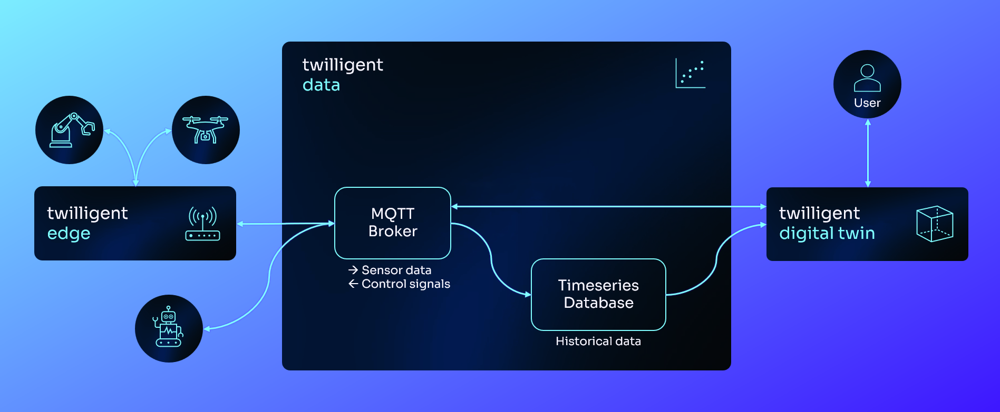

+++
title = "SaaS Platform for IoT Data and Digital Twins"
date = "2024-12-01T00:00:00-00:00"
summary = "At Twilligent, me and my team designed and developed a digital twin platform that bridges physical industrial assets with their digital counterparts. The platform enables real-time monitoring and control of industrial assets through MQTT, as well as storing historical telemetry data and alerts."
categories = ["projects"]
tags = ["projects"]
layout = "hyde-master"
draft = false
+++
Twilligent: Industrial Digital Twin Platform Development
The platform consists of three primary elements:
Twilligent Edge: Acts as the connection point between physical assets and the platform, allowing data exchange and control signals.
Twilligent Data: A robust infrastructure to store, analyze, and retrieve large volumes of time series and real-time data from your assets.
Twilligent Digital Twin: An interactive 3D representation of physical assets, where users can monitor and interact with live data.

High level architecture of the platform components.
Key Technologies
Implemented using modern web technologies, including MQTT for real-time data exchange, WebGL for 3D rendering, and a microservices-based architecture to ensure scalability and performance.
User Management
Created a comprehensive role-based access control system with three distinct user roles: Admin, User, and Viewer, providing granular control over platform capabilities.
Data Integration
Designed a flexible MQTT-based data integration system for seamless connection with industrial assets.
Platform Features Developed
Real-time MQTT-based data exchange and monitoring
3D digital twin visualization with interactive WebGL models
Comprehensive asset and site management system
Alerts management with the option to acknowledge and write a comment
Secure multi-tenant architecture with role-based access control
Historical data storage
Tech Stack
NextJS with Typescript for the web app
NoSQL based database structure using MongoDB Atlas
Microsoft Azure Blob Storage to store WebGL build files and team logos.
Microsoft Azure Container Apps for staging and production environment.
Resources
Highlights from a webinar presenting the platform (Norwegian):
Controlling a robot from the Twilligent platform:
Research Publications
Inclusive Digital Twins with Edge Computing, Cloud Communication and Virtual Reality to Achieve Remote Human-Robot Interaction
Even Falkenberg Langås, Halima Zahra Bukhari, Daniel Hagen, Muhammad Hamza Zafar, Filippo Sanfilippo
12th International Conference on Control, Mechatronics and Automation (ICCMA), 2024
Abstract: Digital twins, advanced robotics, edge computing, and immersive technologies have come together to create novel solutions that increase flexibility and operating efficiency.
This work is motivated by the need to harness these advancements to develop a robust architecture that supports edge intelligence and real-time remote monitoring and control. The aim of this work is to define a comprehensive framework for digital twins of complex mechatronic systems. The framework enables seamless connection between the physical environment and a virtual representation accessible from remote locations. Key components of the framework include the Robot Operating System 2 (ROS 2) for robot control, Node-RED for data processing and edge communication, a Message Queuing Telemetry Transport (MQTT) broker for cloud-based communication, and a virtual reality (VR) application for immersive interaction. A case study is presented to demonstrate the framework’s capabilities. Through the VR application, users can interact with a digital twin of a mechatronic system consisting of a collaborative robot, a programmable logic controller (PLC), a conveyor belt and numerous sensors. The user interface lets the operator manipulate the robot and monitor sensor data in real-time. Latency is measured to validate the performance of the framework, resulting in a mean latency of around 116 ms.
Read moreShow less
Pervasive and connected digital twins for edge computing enabled industrial applications
Filippo Sanfilippo, Even Falkenberg Langås, Halima Zahra Bukhari, Stian Robstad
Proceedings of the 56th Hawaii International Conference on System Sciences (HICSS), 2023
Abstract: A digital twin (DT) is a digital representation of a physical asset that serves as its counterpart — or twin.
DTs differ from static, three-dimensional models in that they are continuously updated with data from numerous sources. In one continually changing world of pervasive computing, where computational and human intelligence are expanding everywhere, DTs can be regarded as the backbone for addressing the synergy of software, devices, movable objects, networks, and people. In this paper, we present a novel perspective for designing, prototyping and testing pervasive and connected DTs for edge computing enabled industrial applications. The provided paradigm allows for the creation of computational models for cloud computing as well as the transmission of data and computational intelligence through analytic platforms. A case study is presented to demonstrate the possibilities of the suggested framework. According to the outlined findings, the proposed architecture contributes to effective maintenance and management of infrastructures and facilities.
Read moreShow less